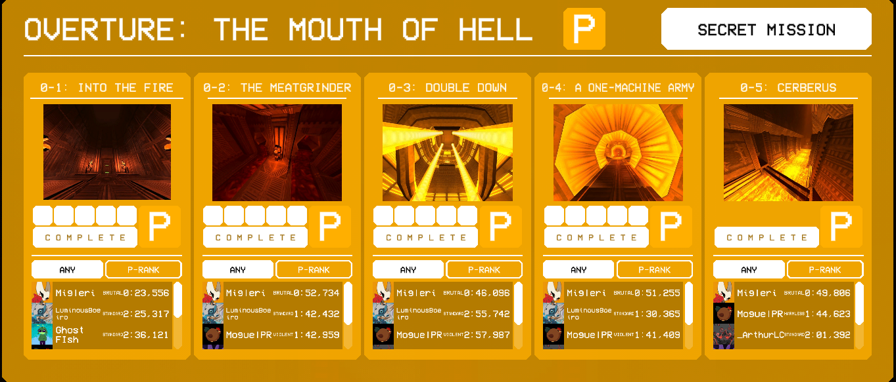
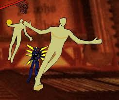
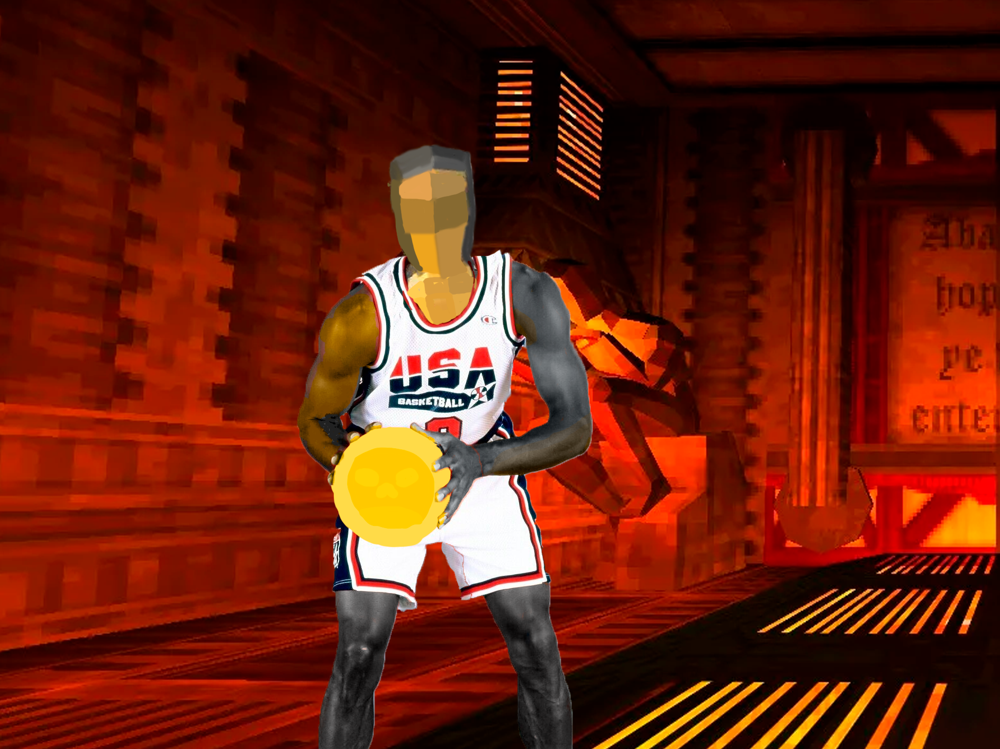
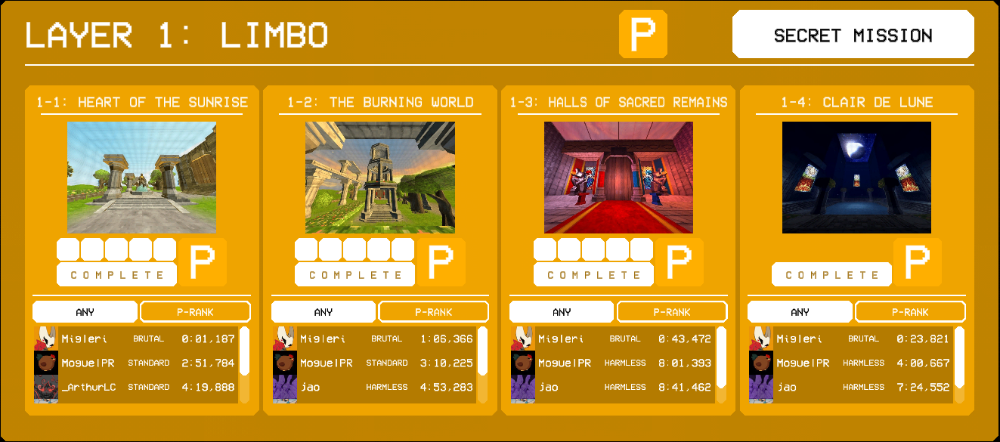
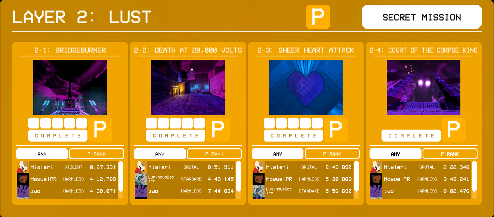
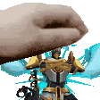

>HUMANIDADE ESTÁ MORTA.
>INFERNO ESTÁ CHEIO.
>SANGUE É COMBUSTÍVEL.
E o meu vício, é ULTRAKILL.

Bem-vindo ao meu blog onde estarei falando de ULTRAKILL, sim, ULTRAKILL, um jogo tão bom que eu poderia falar disso por horas sem descanso, está duvidando de minha obsessão com esse jogo? Então logo abaixo está uma run "pequena" de um dos leveis, levando em conta que fazia tempo que não jogava o jogo.
Depois de você ver essa gameplay em 144p com a mira de um esquizo, você deve imaginar o que está por vir, bem... Pode-se dizer que é MUITA coisa sobre o jogo, história, gameplay, segredos e mais! Por isso que decidi focar mais em gameplay e história já que mesmo eu falando sobre isso, não iria destruir a experiência de alguém que vai jogar o jogo, mas também quero que as pessoas vejam o quão especial é esse jogo e deem uma chance a ele!;
Eu sei que é um pouco caro, mas mesmo assim, tente juntar para compar o jogo! Mas claro, se você quer jogar e não tem dinheiro, o próprio criador falou que está tudo bem fazer isso, como mostrado nesse tweet(ou seria xeet agora?);
Com isso em mente, jogue o jogo se quiser, mesmo se for via pirataria, e se gostou, apoie o jogo, mostre para seus amigos!;
Mas enfim... Eu irei começar de maneira lenta, começarei falando dos atos e suas camadas, então se prepare, já que é hora de ULTRAKILLZAR!12!12!!121!!1;
O MUNDO DE ULTRAKILL
O PLELÚDIO
Onde tudo começa

ABERTURA
A boca do inferno
Esse seria basicamente o tutorial, os próprios bosses que aparecem nessa camadas viram inimigos comum no resto do jogo (Coisa que me deixa com medo que talvez isso aconteça com os bosses de outras camadas...), a camada em minha opinião é um dos melhores tutoriais que tem em um jogo fps, não por que ele ensina bem as mecânicas (Coisa que no inicio ensina de jeito bem rapidão) mas por que ele trás a experiência de maneira bem dinâmica e rápida que muitos tutoriais não fazem, além de trazer uma ambientação de "O que é esse lugar?" e "Como será o inferno em si?" fazendo você pensar que seria um lugar desolado em sangue e fogo e lava, onde tudo estaria vermelho mas quebra essa expectativa totalmente na próxima camada, mas vamos deixar ela de lado por enquanto por que iremos falar sobre certas coisas que amo nessa camada:
Curiosidades e mais!
No primeiro nível, tem um bug usado muito em speedrun, esse bug pode ser feito com você literalmente se esmagando entre canos, é... Mas o mais legal
é que depois do update do Revamp de todos os mapas (Basicamente refazendo todos os mapas para serem mais bonitos e bem feitos além de MUITO mais)
esse erro foi consertado mais logo depois colocado de volta com uma mensagem do Hakita quando você faz!

O bug mais fácil de fazer no jogo, eu acho;

Maurice meu querido <3
Enfim, depois de você continuando de maneira normal ou dessa maneira,
no final você encontrará o boss mais íncrivel do jogo que eu amo!

Curiosidade sobre ele: o nome na barra de boss ali é "Malicious Face(Rosto Malisioso)"
mas toda a comunidade chama ele de Maurice (: E ele consegue solar a maioria dos bosses do
jogo, e ele vira um inimigo normal.
Mas continuando, se você viu na imagem anterior, você deve ter percebido sobre a tal "Secret Mission(Missão Secreta)"
Bem, deixe-me te explicar, cada camada possui um segredo, onde ao faze-lo, te da acesso
a um level secreto dedicado e tematizado em volta a aquela camada, mas também será algo totalmente diferente de um do outro,
eu vou mostrar apenas um como exemplo, mas isso irá a vir lá para frente.
Mas nessa camada seria apenas isso, além de claro os Cerberus baller;

PRÓXIMA CAMADA AAAAAAAAAAAAAA;
LIMBO
A recepção do inferno vivo

Se lembra quando eu falei que ia ser um choque de expectativa como seria o inferno?
Bem aqui está o considerado inferno;

Pode-se dizer que não é exatamente o inferno em si já que o limbo
é algo separado e por aí vai mas, o jogo considera-o como a primeira camada
então também irei, e se você já não percebeu, as camadas de ULTRAKILL
são inspiradas diretamente de "O inferno de Dante", mas também de Devil May Cry e
Várias outras obras, então é sempre daora se você em sua jogatina ver algo que
foi inspirado por outra coisa ou que é uma referência direta a aquela obra, mas enfim,
voltando a falar sobre a camada, ela é daora, tem areas grandes quando pode
e trás meio que dois bosses, eu falo isso porque... bem... Um deles vira um inimigo comum em outros
leveis, mas é bem fácil de lidar com ele! É literalmente só dar um soco com alguma sopa contra ele...

Enfim, nessa camada também te ensina como usar caveiras para abrir portas, que vai ser usado em diversas partes
do jogo.
No final dessa camada você vai lutar contra o Boss REAL da camada, já que elas geralmente são feitas
com um mini-boss e então um level inteiro feito para ser a do Boss da camada, e esse boss é...
O clone maligno de TI!!! Mas para ser sincero, é o Boss mais Fácil do jogo inteiro.

V2 sendo mais uma vez abusado por um speedrunner
E desse jeito essa camada está completa, essa camada eu realmente não tenho tantas coisas para falar... Tipo a maioria eu já falei ou coisa do tipo sabe... No primeiro level dela você consegue terminar em menos de um segundo, e... HANK.

"Nada acontece, mas você sente uma estranha satisfação. Você decide nomea-lo de Hank."

ISSO VAI FAZER SENTIDO DEPOIS CONFIA.
LUXÚRIA
"O ■■■■■■■ vai ficar aqui hein"
Tinha que colocar algo daora aqui né? ahn...
O lar de Minus

A camada que já mostra muito mais coisas e abre simplesmente um lar de possibilidades...
Estranhas... Tem por exemplo o corpo gigante de seu antigo governante, ah! Se lembra quando eu falei
que ia usar um dos leveis secretos como exemplo? Bem... Eu ia usar a desse level,
mas pensei que seria melhor VOCÊS irem encontrar por si mesmos sobre essa missão secreta.
Mas enfim, a camada te dá uma nova arma! A Railgun.

A railgun é uma das melhores armas do jogo para dar dano bruto, mesmo que em minha opinião,
todos tem esse potencial, já que o jogo foi feito em mente que você com estilo no SEU estilo,
quase todas as armas conseguem se complementar e então 'combar'
com outras coisas e assim causar mais dano e ganhar MAIS estilo
e assim provávelmente te dar um ranking maior quando terminar o nível.

Aliás, foi um desses combos que inspirou eu fazer essa arte de Ultrakill!
 Curiosidade sobre esse level que tu adquire a railgun, a música que toca além de ser considerada
umas das melhores do jogo, mesmo que nenhuma seja sequer perto de ruim, ela também tem um
leitmotiv (básicamente uma parte de alguma musica que é usada em outra música, geralmente até com instrumentos diferentes mas
mantendo a mesma composição) que se é usada em várias outras músicas do jogo, já que a mesma é a GOAT das osts.
Curiosidade sobre esse level que tu adquire a railgun, a música que toca além de ser considerada
umas das melhores do jogo, mesmo que nenhuma seja sequer perto de ruim, ela também tem um
leitmotiv (básicamente uma parte de alguma musica que é usada em outra música, geralmente até com instrumentos diferentes mas
mantendo a mesma composição) que se é usada em várias outras músicas do jogo, já que a mesma é a GOAT das osts.
Requiem - Heaven Pierce Her
continuando a falar da camada, ela é a primeira de muitos que apresenta um Boss de mapa! Basicamente um bicho gigante que age como boss, e esse é ainda mais daora quando vemos a lore sobre o que é e o que aconteceu com ele;

